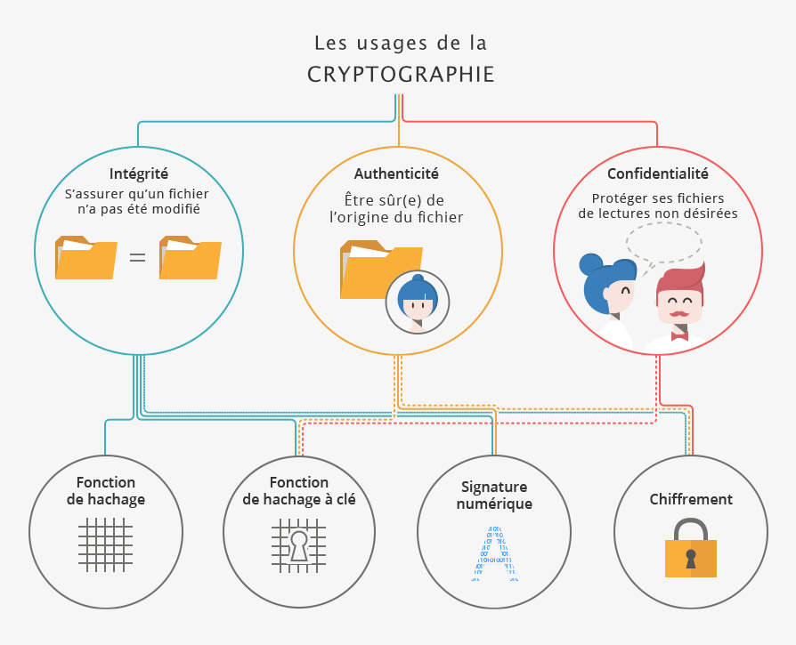
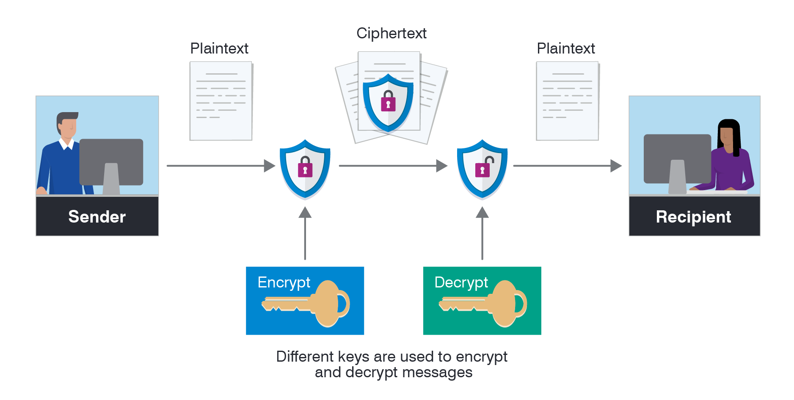

Les protections des données grâce aux algorithmes de cryptage
Pourquoi la protection des données est-elle importante ?
 De nos jours, nos données personnelles sont omniprésentes. Elles sont stockées par des entreprises,
des gouvernements et d'autres organisations, souvent à notre insu. Celles-ci permettent de nous
identifier, de nous localiser, de nous suivre et de nous analyser.
Grâce à ces informations, les entreprises peuvent personnaliser leurs services, cibler leurs
publicités
et améliorer leurs produits. Cependant, ces données peuvent également être utilisées à des fins
malveillantes, telles que le vol d'identité, la fraude ou la surveillance de masse.
De nos jours, nos données personnelles sont omniprésentes. Elles sont stockées par des entreprises,
des gouvernements et d'autres organisations, souvent à notre insu. Celles-ci permettent de nous
identifier, de nous localiser, de nous suivre et de nous analyser.
Grâce à ces informations, les entreprises peuvent personnaliser leurs services, cibler leurs
publicités
et améliorer leurs produits. Cependant, ces données peuvent également être utilisées à des fins
malveillantes, telles que le vol d'identité, la fraude ou la surveillance de masse.
Le rôle du RGPD.
La protection des données est essentielle pour garantir que ces informations soient traitées de manière responsable et éthique. Le RGPD (Règlement Général sur la Protection des Données) est une réglementation de l'Union européenne qui vise à protéger les données personnelles des citoyens de l'UE. Il impose des obligations aux entreprises qui collectent et traitent des données personnelles, telles que l'obligation de demander le consentement des individus avant de collecter leurs données et de garantir que ces données soient stockées en toute sécurité.
Source: cnil.fr - RGPD : de quoi parle-t-on ? (10 avril 2018)Une solution pour protéger les données : le cryptage des informations
Le cryptage des données est une méthode de protection des informations en les rendant illisibles pour toute personne non autorisée. Il consiste à transformer les données en un format codé à l'aide d'un algorithme de cryptage, de sorte qu'elles ne puissent être lues que par une personne disposant de la clé de déchiffrement appropriée. Les algorithmes de cryptage sont conçus pour être extrêmement difficiles à déchiffrer sans la clé correspondante, ce qui garantit que les données restent confidentielles et sécurisées.
Source: itpro.fr - Comprendre les algorithmes de cryptage (29 avril 2013)Quelques algorithmes de chiffrement les plus utilisés
Chiffrement AES (Advanced Encryption Standard)
L'AES (Advanced Encryption Standard) est un algorithme de chiffrement symétrique très sécurisé, utilisé pour protéger les données. Il remplace le DES depuis 2001. Fonctionnant sur des blocs de données de taille fixe et prenant en charge des clés de 128, 192 et 256 bits, l'AES est connu pour sa robustesse contre les attaques cryptographiques. Son efficacité repose sur une série d'opérations telles que SubBytes, ShiftRows, MixColumns et AddRoundKey permettant de complexifier le chiffrement plusieurs fois. La sécurité de la clé de chiffrement est primordiale pour son implémentation réussie, nécessitant un générateur de nombres aléatoires sécurisé et des mesures de protection adéquates.
Source: kiteworks.com - Comment fonctionne AES ? Tout sur les étapes de l'algorithme (octobre 5, 2023)Chiffrement RSA (Rivest, Shamir, Adleman)
Le RSA (Rivest-Shamir-Adleman) est un algorithme de cryptographie asymétrique largement utilisé. Il permet de résoudre le problème de la communication sécurisée sans avoir à partager préalablement une clé de chiffrement. Avec RSA, chaque utilisateur dispose d'une paire de clés : une clé publique, utilisée pour chiffrer les messages, et une clé privée correspondante, utilisée pour les déchiffrer. L'algorithme RSA est souvent utilisé en conjonction avec d'autres systèmes de chiffrement, notamment pour crypter les signatures numériques afin de garantir l'intégrité et l'authenticité des messages.
Source: proofpoint.com - Qu'est-ce que le chiffrement ? (20 janv. 2021) Source: sealpath.com - Plongée dans les Types de Cryptage (27 févr. 2024)Chiffrement ECC (Elliptic Curve Cryptography):
L'ECC (Elliptic Curve Cryptography) est une technique de cryptographie alternative au RSA, utilisant les mathématiques des courbes elliptiques pour générer des clés sécurisées. Contrairement au RSA, l'ECC offre des clés plus petites et une sécurité robuste. De plus en plus utilisée pour sécuriser les données en ligne et optimiser la compatibilité mobile, l'ECC est considérée comme la prochaine génération de cryptographie à clé publique, offrant un niveau de sécurité supérieur. Une courbe elliptique dans ce contexte est une courbe plane définie par l'équation y² = x³ + ax + b, où toute ligne non verticale intersecte la courbe en trois points ou moins.
Source: avinetworks.com - Elliptic Curve Cryptography Source: cyberpedia.reasonlabs.com - Elliptic Curve Cryptography (ECC) (7 févr. 2024)